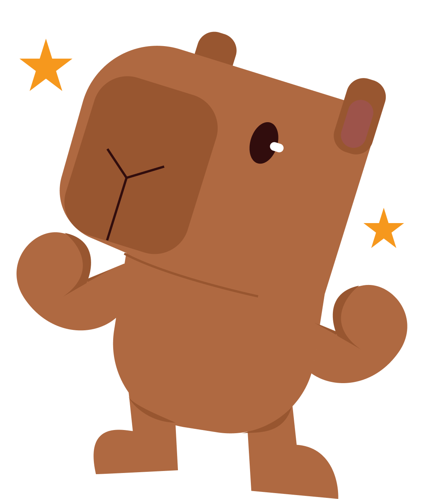
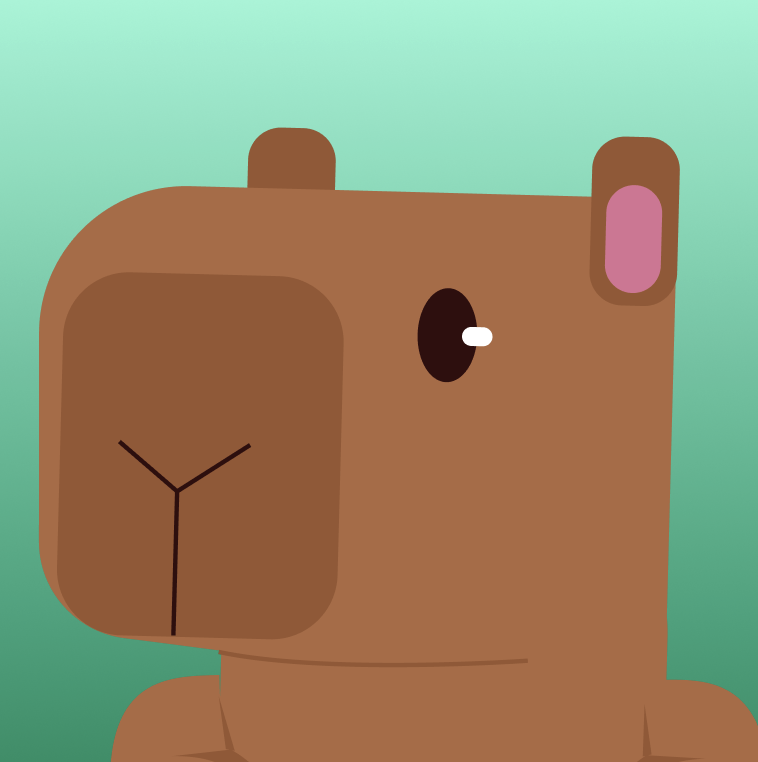

Capi
Agente que ajuda pessoas a sair das dívidas
A Capi organiza o financeiro da pessoa, calcula o que pagar primeiro e acompanha até quitar. Time pequeno, sou um dos fundadores, e já está no ar com usuário de verdade usando.
- → Backend, modelo de dados e boa parte da interface
- → Camada de agente em cima do fluxo financeiro, via OpenAI API
- → Time bem eclético. Trabalhei direto com designers, pegando tela no Figma e implementando.
Python
TypeScript
React
OpenAI API
PostgreSQL